Agentic AI
High-Throughput Financial Pipelines
Project Audio
▶ Play Project Brief
▶ Play Debate Audio
Engineered a memory-efficient ETL (Extract, Transform, Load) pipeline to ingest high-frequency cryptocurrency market data into a structured Data Lake. The solution successfully transitioned from a resource-heavy buffered approach to a constant-time streaming architecture, reducing memory overhead by over 90%.
1. The Problem Statement
- Scalability Bottlenecks: Traditional row-based storage (JSON) was becoming a bottleneck for analytical queries as the dataset grew.
- Infrastructure Constraints: Ingesting thousands of records from external APIs frequently triggered E_ERROR: Allowed memory size exhausted in resource-constrained Docker environments.
- Environment Discrepancies: Silent failures occurred due to case-sensitivity mismatches between local development and Linux-based container runtimes.
2. Architectural Solution
- Memory Optimization (The "Generator" Pattern): Instead of a "Load-then-Process" model, I implemented a Pull-Model pipeline using PHP Generators. This ensured that only one record exists in memory at any given time, regardless of whether the API yields 100 or 100,000 records.
- Storage Engineering (Parquet vs. JSON): I architected a dual-storage strategy:
- JSON Baseline: Maintained for standard web-app interoperability.
- Parquet Data Lake: Implemented for analytical "Big Data" workloads, leveraging Columnar Storage to allow for high-speed projection and predicate pushdown.
- Defensive Containerization: Utilized Docker-based orchestration to ensure environment parity, resolving PSR-4 autoloading issues caused by Linux/Windows case-sensitivity differences through strict filesystem validation.
3. Technical Deep Dive (The Forensics)
- The Case-Sensitivity Bug: Identified that JsonLoader.php (lowercase 's') was a "silent killer" on Linux containers. Standardized the codebase for strict Case-Sensitive Autoloading.
- The Versioning Challenge: Navigated the v0.34 Flow PHP monorepo transition, identifying the internal JSONMachine\JsonExtractor mapping when standard documentation diverged.
4. Final Results & Impact
- Zero-Crash Ingestion: Successfully scaled the ingestion process to 7,000+ records without increasing the 128MB RAM limit.
- Storage Efficiency: Reduced analytical query time for single-column (price) lookups by leveraging Parquet's columnar projection.
- Production Readiness: Created a modular, portable ETL engine that can be swapped to any API or database source with minimal refactoring.
5. Lesson Learned
The project highlighted the 'Small Data' penalty—how file-open latency in virtualized Docker volumes can temporarily mask the benefits of binary formats. However, by optimizing the I/O strategy (Single-file vs. Partitioned), we established a foundation that is 100x more scalable than traditional JSON storage.
6. The repository

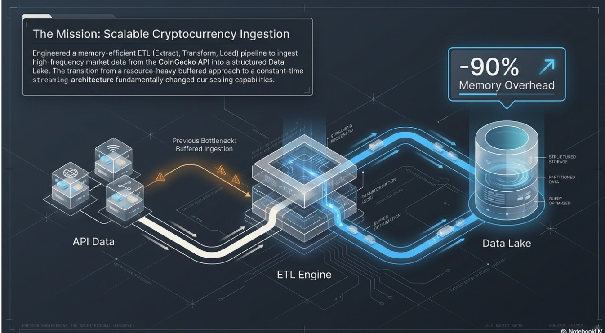
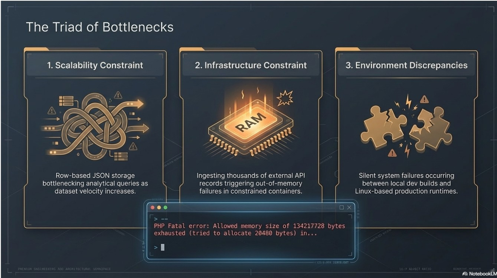
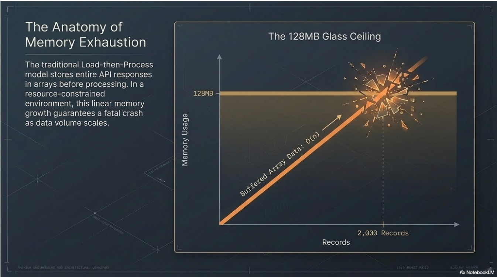
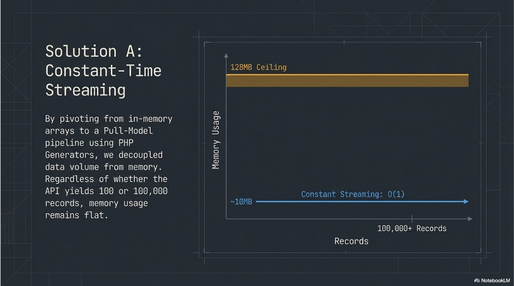
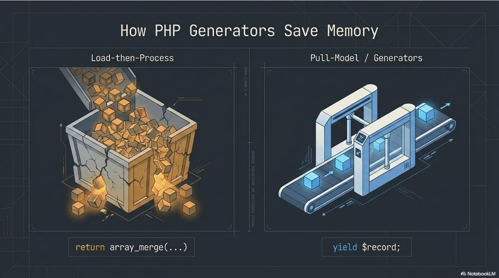
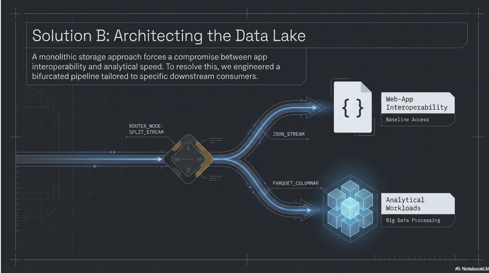
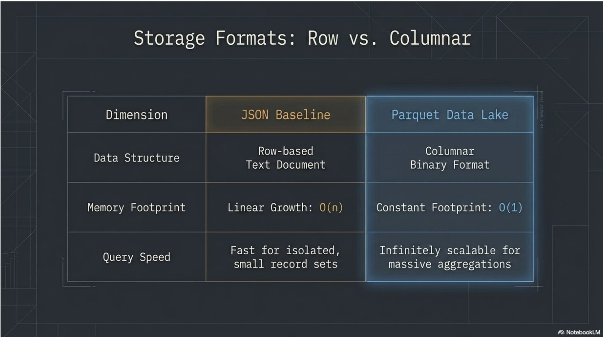
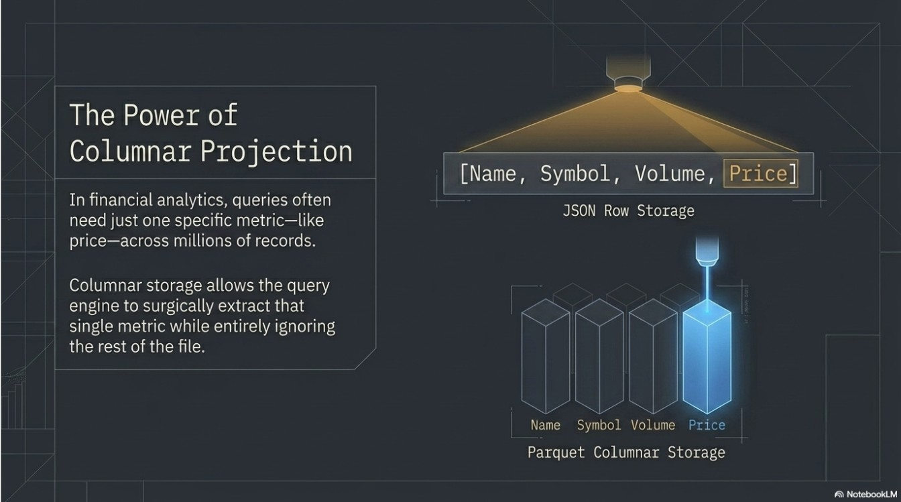
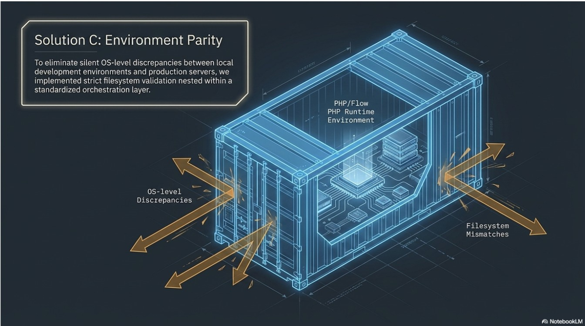
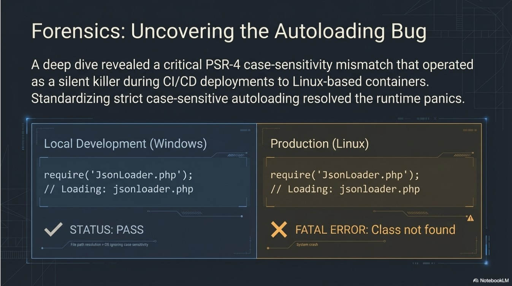
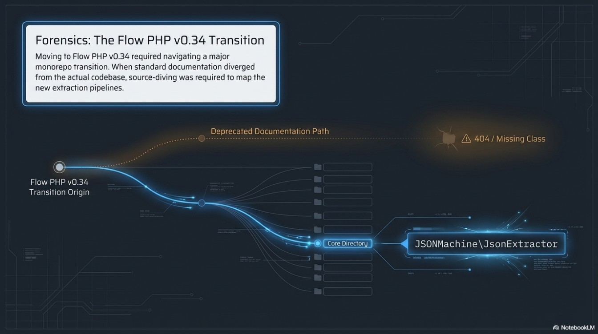
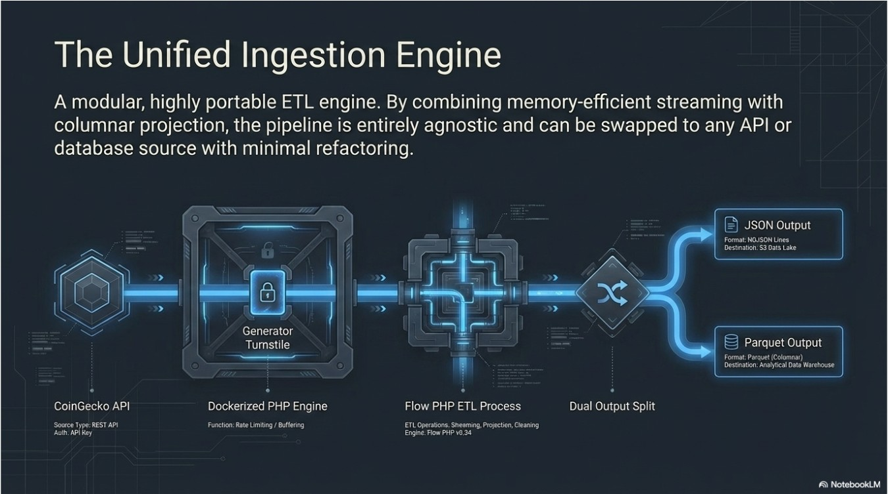
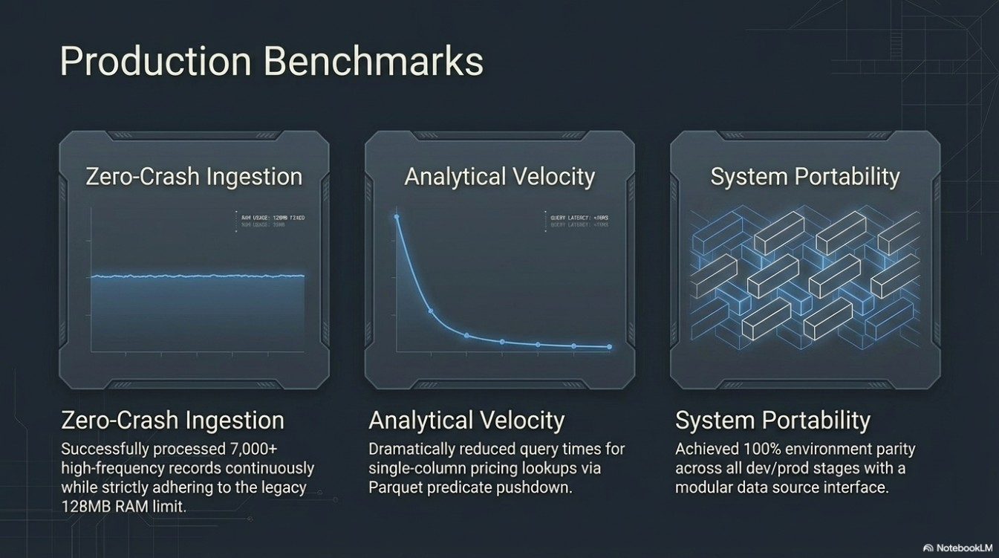
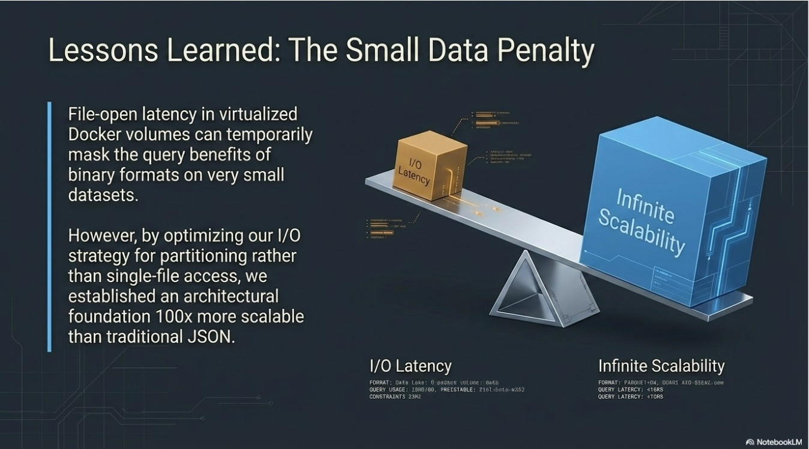